기계정비산업기사 (2019-08-04 기출문제)
1과목: 공유압 및 자동화시스템
1. 공압제어밸브의 연결구 표시방법이 틀린것은?
- 압축공기 공급라인 : P 또는 1
- 작업라인 : A, B, C 또는 1, 2, 3
- 배기라인 : R, S, T 또는 3, 5, 7
- 제어라인 : X, Y, Z 또는 10, 12, 14
(정답률: 79%)
2. 유압장치의 구성요소와 해당 기기의 연결이 옳은 것은?
- 동력원 – 전동기, 엔진, 윤활기
- 동력장치 – 오일탱크, 유압모터
- 구동부 – 실린더, 유압펌프, 요동 액추에이터
- 제어부 – 압력제어밸브, 유량제어밸브, 방향제어밸브
(정답률: 88%)

3. 공압회로에서 압축공기를 대기 중으로 방출할 경우 배기속도를 줄이고 배기음을 작게 하기 위하여 사용되는 것은?
- 소음기
- 완충기
- 진공패드
- 원터치 피팅
(정답률: 93%)
4. 자중에 의한 낙하 등을 방지하기 위한 배압을 생기게 하고, 역방향의 흐름이 자유롭도록 체크밸브의 기능이 내장되어 있는 밸브는?
- 방향제어밸브
- 유압서보밸브
- 유량제어밸브
- 카운터 밸런스 밸브
(정답률: 84%)
5. 절대압력이 일정할 때 절대온도와 체적과의 관계는?
- 공기의 체적은 절대온도에 비례한다.
- 공기의 체적은 절대온도에 반비례한다.
- 공기의 체적은 절대온도의 제곱에 비례한다.
- 공기의 체적은 절대온도의 제곱에 반비례한다.
(정답률: 73%)
6. 다음 회로와 동일한 동작의 논리는? (단, 입력은 X1, X2, 출력은 Y이다)
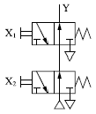
- OR 논리
- AND 논리
- NOR 논리
- NAND 논리
(정답률: 47%)
7. 구조가 간단하고 값이 저렴하며 차량, 건설기계, 운반기계 등에 널리 사용되고 외접, 내접 등의 구조를 갖는 펌프는?
- 기어펌프
- 베인펌프
- 피스톤 펌프
- 플런저 펌프
(정답률: 81%)
8. 유압 실린더의 실린더 전진과 후진속도를 일정하게 하는 방법으로 옳은 것은?
- 양 로드 실린더를 사용한다.
- 브레이크 회로를 사용한다.
- 블리드 오프 회로를 사용한다.
- 카운터 밸런스 회로를 사용한다.
(정답률: 83%)
9. 공압모터의 종류가 아닌 것은?
- 기어모터
- 나사모터
- 베인모터
- 피스톤 모터
(정답률: 57%)
10. 다음 밸브기호의 명칭은?
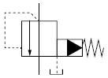
- 감압밸브
- 릴리프 밸브
- 카운터 밸런스 밸브
- 파일럿 작동형 시퀀스 밸브
(정답률: 64%)
11. 측온저항체로 이용되기 위한 요구조건이 아닌 것은?
- 저항온도계수가 작을 것
- 소선의 가공이 용이할 것
- 사용 온도범위가 넓을 것
- 화학적, 기계적으로 안정될 것
(정답률: 76%)
12. 유압 작동유에 공기가 침입할 경우 발생하는 현상으로 적절한 것은?
- 작동유의 과열
- 토출유량의 증대
- 비금속 실(Seal)의 파손
- 실린더의 불규칙적인 작동
(정답률: 73%)
13. 다음 기호의 명칭으로 옳은 것은?
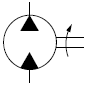
- 공기압 모터
- 요동형 액추에이터
- 정용량형 펌프ㆍ모터
- 가변용량형 펌프ㆍ모터
(정답률: 70%)
14. 구조가 간단하고 무게가 가벼우며, 3~10개의 날개가 삽입되어 있는 구조로 대부분의 공압회로에 사용되는 모터는?
- 기어모터
- 베인모터
- 터빈모터
- 피스톤 모터
(정답률: 71%)
15. 제어시스템 분류 중 신호처리 방식에 의한 분류가 아닌 것은?
- 논리제어
- 비동기제어
- 시퀀스 제어
- 파일럿 제어
(정답률: 65%)
16. 설비 개선 사고법의 종류가 아닌 것은?
- 복 원
- 기능의 사고법
- 미결함의 사고법
- 미조정, 미조절화의 사고법
(정답률: 63%)
17. 전자계전기를 사용할 때 주의사항이 아닌것은?
- 계전기의 설치 높이를 확인한다.
- 정격전압 및 정격전류를 확인한다.
- 본체 취부 시 확실히 고정하여야 한다.
- 2개 이상의 계전기를 사용할 때 적당한 간격을 유지해야 한다.
(정답률: 72%)
18. 단동 실린더가 아닌 것은?
- 탠덤 실린더
- 격판 실린더
- 피스톤 실린더
- 벨로스 실린더
(정답률: 63%)
19. 리드 스위치의 특징으로 틀린 것은?
- 반복 정밀도가 낮다.
- 회로 구성이 간단하다.
- 사용 온도범위가 넓다.
- 내전압 특성이 우수하다.
(정답률: 67%)
20. PLC에 사용되는 CPU 내부 구성요소에서 ALU의 역할은?
- 스파크 방지
- 데이터의 저장
- 아날로그의 영상화
- 산술이나 논리연산
(정답률: 76%)
2과목: 설비진단관리 및 기계정비
21. 윤활유를 사용하는 목적이 아닌 것은?
- 감마작용
- 냉각작용
- 방청작용
- 응력집중작용
(정답률: 83%)
22. 설비를 구성하고 있는 부품의 피로, 노화현상 등에 의해서 시간의 경과와 함께 고장률이 증가하는 시기는?
- 초기 고장기
- 우발 고장기
- 마모 고장기
- 라이프 사이클
(정답률: 82%)
23. 다음 중 설비진단기법이 아닌 것은?
- 진동법
- 잔류법
- SOAP법
- 페로그래피법
(정답률: 60%)
24. 진동차단기로 이용되는 패드의 재료로 부적합한 것은?
- 스프링
- 코르크
- 스펀지 고무
- 파이버 글라스
(정답률: 72%)
25. 내부에 형성되어 있는 하나 혹은 그 이상의 체임버(Chamber)에 의해서 입사소음에너지를 반사하여 소멸시키는 장치는?
- 반사 소음기
- 회전식 소음기
- 흡음식 소음기
- 흡진식 소음기
(정답률: 78%)
26. 설비보전 표준 설정의 직접 기능에 속하지 않는 것은?
- 설비검사
- 설비 정비
- 설비 수리
- 설비 교체
(정답률: 69%)
27. 설비관리기능 중 지원기능과 가장 거리가 먼 것은?
- 부품 대체(교체) 분석
- 보전자재 선정 및 구매
- 보전인력관리 및 교육훈련
- 포장, 자재 취급, 저장 및 수송
(정답률: 60%)
28. 윤활제의 공급방식에서 비순환 급유법에 속하는 것은?
- 원심 급유법
- 패드 급유법
- 유륜식 급유법
- 사이펀 급유법
(정답률: 66%)
29. 센서 부착방법 중 일반적인 밀랍 고정의 특징으로 틀린 것은?
- 장기적 안정성이 안 좋다.
- 고정 및 이동이 용이하다.
- 사용 후 구조물의 접착면의 깨끗이 할 수있다.
- 먼지, 습기, 고온의 영향을 받지 않는다.
(정답률: 81%)
30. 그리스를 가열했을 때 반고체 상태의 그리스가 액체 상태로 되어 떨어지는 최초의 온도로 그리스의 내열성을 평가하는 기준이 되는 것은?
- 이유도
- 적하점
- 침투점
- 산화 안정도
(정답률: 78%)
31. 설비의 라이프 사이클 중 설비투자계획과정에 속하는 것은?
- 설계, 제작
- 설치, 운전
- 조사, 연구
- 보전, 폐기
(정답률: 73%)
32. 자재흐름분석 P-Q분석에 의하여 분류가 결정되면 그 분류 내에 있는 제품들에 대하여 개별적인 분석을 행할 때 그 분류와 내용이 옳은 것은?
- A급 분류 : 제품의 종류는 많고 생산량은 적다. 유입유출표를 작성한다.
- B급 분류 : 제품의 종류는 중간이고 생산량도 중간이다. 다품종 공정표를 작성한다.
- C급 분류 : 제품의 종류는 적고 생산량이 많다. 단순작업 동정표 다음 조립공정표를 작성한다.
- D급 분류 : 제품의 종류도 적고 생산량도 적다. 소품종 공정표를 작성한다.
(정답률: 73%)
33. 설비의 분류가 바르게 연결된 것은?
- 관리설비 : 인입선설비, 도로ㆍ항만설비, 육상 하역설비, 저장설비
- 유틸리티 설비 : 기계ㆍ운반장치, 전기장치, 배관, 조명, 냉난방설비
- 판매설비 : 서비스 스테이션(Service Station), 서비스 숍(Service Shop)
- 생산설비 : 건물, 공장관리설비 및 보조설비, 복리후생설비
(정답률: 81%)
34. 설비관리 조직의 계획상 고려되어야 할 사항으로 가장 거리가 먼 것은?
- 제품의 품질
- 설비의 특징
- 지리적 조건
- 외주 이용도
(정답률: 65%)
35. 기계진동의 가장 일반적인 원인으로서 진동 특성이 1f 성분이 탁월한 회전기계 열화원인은? (단, f = 회전 주파수)
- 공 진
- 언밸런스
- 기계적 풀림
- 미스 얼라인먼트
(정답률: 71%)
36. 다음 중 로스(Loss) 계산방법이 잘못된것은?
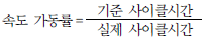
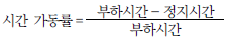
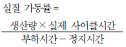
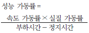
(정답률: 59%)
37. 만성 로스의 대책으로 가장 거리가 먼 것은?
- 현상 해석을 철저히 한다.
- 로스의 발생량을 정확하게 측정한다.
- 관리해야 할 요인계를 철저히 검토한다.
- 요인 중에 숨어 있는 결함을 표면으로 끌어낸다.
(정답률: 55%)
38. 작업이 표준화되고 대량 생산에 적합한 설비 배치로 일명 라인별 배치라고도 하는 것은?
- 기능별 설비 배치
- 혼합형 설비 배치
- 제품별 설비 배치
- 제품 고정형 설비 배치
(정답률: 75%)
39. 보전용 자재의 상비품 발주방식 중 발주량은 일정하고 발주의 시기가 변화되는 방식은?
- 정량 발주방식
- 정기 발주방식
- 적소 발주방식
- 비상 발주방식
(정답률: 75%)
40. 다음 중 전치증폭기의 기능은?
- 전류 증폭과 리액턴스 결합
- 전압 증폭과 리액턴스 결합
- 신호 증폭과 임피던스 결합
- 저항 증폭과 임피던스 결합
(정답률: 63%)
3과목: 공업계측 및 전기전자제어
41. 다음 중 수동형 센서(Passive Sensor)에 속하는 것은?
- 포토 커플러
- 포토 리플렉터
- 레이저 센서
- 적외선 센서
(정답률: 63%)
42. 출력 파형이 다음 그림과 같다면 논리기호는?
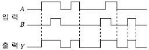
- OR
- AND
- NOR
- NAND
(정답률: 72%)
43. 다음 중 제어밸브를 밸브시트의 형태에 따라 분류한 것으로 틀린 것은?
- 앵글밸브
- 공기압식 제어밸브
- 게이트 밸브
- 글로브 밸브
(정답률: 62%)
44. 0.2[μF]의 콘덴서에 1,000[V]의 전압을 가할 때 축적되는 에너지[J]는?
- 0.1
- 1
- 10
- 100
(정답률: 58%)
45. 다음 그림의 회로에서 출력전압(V0)은? (단, R1=R2=R3=RF)
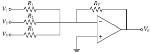
- -(V1+V2+V3)
- V1+V2+V3
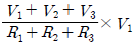
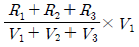
(정답률: 71%)
46. 다음의 열전대 조합에서 가장 높은 온도까지 측정할 수 있는 것은?
- 백금로듐 – 백금
- 크로멜 – 알루멜
- 철 – 콘스탄탄
- 구리 – 콘스탄탄
(정답률: 80%)
47. 다음 중 제어시스템의 안정도 판별법이 아닌 것은?
- 루스-허위츠(Routh-Hurwitz) 판별법
- 나이퀴스트(Nyquist) 판별법
- 디지털제어 판별법
- 보드선도 판별법
(정답률: 56%)
48. 다음 그림기호 중 한시동작형 a접점은?
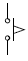
(정답률: 72%)
49. 8개의 비트(bit)로 표현 가능한 정보의 최대 가지수는?
- 211
- 256
- 285
- 512
(정답률: 85%)
50. 트랜지스터 증폭회로 중 입력과 출력전압이 동위상이고 큰 입력저항과 작은 출력을 가지며 전압 이득이 1에 가까워 임피던스 매칭용 버퍼로 사용되는 회로는?
- 공통 이미터 증폭기 회로
- 공통 베이스 증폭기 회로
- 공통 컬렉터 증폭기 회로
- 공통 소스 증폭기 회로
(정답률: 52%)
51. 도선의 전기저항에 관한 설명으로 옳은 것은?
- 도선의 길이에 비례한다.
- 도선의 길이에 반비례한다.
- 도선의 길이의 제곱에 비례한다.
- 도선의 길이의 제곱에 반비례한다.
(정답률: 64%)
52. 피드백 제어계에서 제어요소는?
- 검출부와 조작부
- 조절부와 조작부
- 검출부와 조절부
- 비교부와 검출부
(정답률: 73%)
53. 다음 중 단상 유도전동기의 기동방법으로 틀린 것은?
- 분상 기동형
- 직권 기동형
- 셰이딩 코일형
- 콘덴서 기동형
(정답률: 43%)
54. 차압식 유량계의 차압기구에 해당되지 않는 것은?
- 회전자
- 오리피스
- 벤투리관
- 피토관
(정답률: 61%)
55. 다음 소자 중 검출용 기기는?
- 누름 버튼 스위치
- 캠 스위치
- 토글 스위치
- 리밋 스위치
(정답률: 68%)
56. 연산증폭기(Op Amp)의 특징으로 틀린것은? (단, 연산증폭기는 이상적인 연산 증폭기이다)
- 전압 이득이 무한대이다.
- 단위 이득 대역폭은 0이다.
- 입력저항이 무한대이다.
- 출력저항이 0이다.
(정답률: 73%)
57. 직류기의 3대 요소는?
- 계자, 전기자, 보주
- 전기자, 보주, 정류자
- 계자, 전기자, 정류자
- 전기자, 정류자, 보상권선
(정답률: 87%)
58. 다음 그림과 같이 정전 용량 C1, C2를 병렬로 접속하였을 때의 합성 정전용량은?
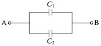
- C1+C2
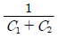
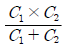
- C1×C2
(정답률: 67%)
59. 계장 제어시스템의 제어밸브 조작부의 구비조건으로 틀린 것은?
- 제어신호에 정확하게 동작할 것
- 히스테리시스 현상이 클 것
- 현장의 환경조건에 충분히 견딜 것
- 보수점검이 용이할 것
(정답률: 86%)
60. 다음 회로의 다이오드의 양단에 걸리는 전압[V]은? (단, 다이오드는 이상적인 다이오드다)
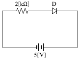
- 0
- 1
- 3
- 5
(정답률: 69%)
4과목: 기계정비 일반
61. 합성고무와 합성수지 및 금속 클로이드 등을 주성분으로 제조된 액상 개스킷의 특징이 아닌 것은?
- 접합면에 바르면 일정시간 후 건조된다.
- 상온에서 유동성이 있는 접착성 물질이다.
- 사용 온도범위는 보통 5~35[℃] 정도이다.
- 누유 및 누수를 방지하고 내압기능을 가지고 있다.
(정답률: 79%)
62. 관 이음쇠의 기능이 아닌 것은?
- 관로의 연장
- 관로의 곡절
- 관로의 분기
- 관의 피스톤 운동
(정답률: 79%)
63. 500[rpm] 이하로 사용되던 길이 2[m]의 축이 구부러져 수정하고자 할 때 사용하는 공구는?
- 짐 크로(Jim Crow)
- 토크 렌치(Torque Wrench)
- 임팩트 렌치(Impact Wrench)
- 스크루 익스트랙터(Screw Extractor)
(정답률: 75%)
64. 다음 기어 중 두 축이 평행하지도 않고 만나지는 않는 것은?
- 래 크
- 스퍼 기어
- 웜 기어
- 헬리컬 기어
(정답률: 74%)
65. 볼트, 너트의 풀림 방지에 주로 사용되는 핀은?
- 평행 핀
- 분할 핀
- 스프링 핀
- 테이퍼 핀
(정답률: 73%)
66. 혐기성 접착제에 대한 설명으로 틀린 것은?
- 경화가 느리고 경화한 후 무게가 증가한다.
- 가스, 액체가 누설되는 것을 막을 때 사용한다.
- 진동이 있는 차량, 항공기, 동력기 등의 체결용 요소 등의 풀림을 막기 위해 사용한다.
- 일단 경화되면 유류, 소금물, 유기용제에 대하여 내성이 우수하고 반영구적으로 노화되지 않는다.
(정답률: 66%)
67. 펌프 운전 시 캐비테이션 발생 없이 펌프가 안전하게 운전되고 있는가를 나타내는 척도로 사용되는 것은?
- 전수두
- 실수두
- 토출수두
- 유효 흡입수두
(정답률: 64%)
68. 밸브에 대한 설명을 옳은 것은?
- 슬루스 밸브는 유체의 역류를 방지하기 위한 밸브이며 리프트식과 스윙식이 있다.
- 글로브 밸브는 밸브 박스가 구형으로 되어있고 밸브의 개도를 조절해서 교축기구로 쓰인다.
- 체크밸브는 전두부(핸들)를 90° 회전시킴으로써 유로의 개폐를 신속히 할 수 있다.
- 콕(Cock)은 밸브 박스의 밸브 시트와 평행으로 작동하고 흐름에 대해 수직으로 개폐를 한다.
(정답률: 66%)
69. 펌프에 흡입관을 설치할 때 적절한 방법이 아닌 것은?
- 관의 길이는 짧고 곡관의 수는 적게 한다.
- 흡입관에서 편류나 와류를 발생시킨다.
- 흡입관 끝에 스트레이너 또는 풋밸브를 사용한다.
- 관 내 압력은 대기압 이하로 공기 누설이 없는 관 이음으로 한다.
(정답률: 73%)
70. 죔새가 있는 베어링을 축에 설치할 경우 베어링의 적정 가열온도는?
- 90~120[℃]
- 130~150[℃]
- 160~180[℃]
- 190~210[℃]
(정답률: 71%)
71. 송풍기를 설치할 때 기초판 위에 넣어 높이를 조정할 수 있도록 하는 기계요소는?
- 코 터
- 평행핀
- 구배키
- 구배 라이너
(정답률: 61%)
72. 벌류트 펌프(Volute Pump) 시운전 시 체크하여야 할 항목으로 옳지 않은 것은?
- 토출밸브를 열어 둔다.
- 각종 게이지를 확인 후 기록해 둔다.
- 공기빼기콕을 열고 마중물을 넣는다.
- 펌프를 손으로 돌려 회전 상태를 확인한다.
(정답률: 70%)
73. 펌프의 부식을 촉진시키는 요인으로 옳지 않은 것은?
- 온도가 높을수록 부식되기 쉽다.
- 유속이 빠를수록 부식되기 쉽다.
- 금속 표면이 거칠수록 부식되기 쉽다.
- 유체 내의 산소량이 적을수록 부식되기 쉽다.
(정답률: 84%)
74. 펌프를 원리구조상으로 분류할 때 회전펌프에 속하지 않는 것은?
- 베인펌프
- 나사펌프
- 플런저 펌프
- 외접 기어펌프
(정답률: 55%)
75. 공기의 유량과 압력을 이용한 장치를 압력에 의해 분류할 때 0.1~1.0[kgf/cm2] 압력으로 분류되는 장치는?
- 압축기
- 통풍기
- 송풍기
- 공기여과기
(정답률: 72%)
76. 깊은 홈 볼 베어링의 규격이 6200일 때 안지름은 얼마인가?
- 10mm
- 12mm
- 15mm
- 20mm
(정답률: 69%)
77. 송풍기의 주요 구성품이 아닌 것은?
- 임펠러
- 케이싱
- 이송장치
- 풍량 제어장치
(정답률: 67%)
78. 압축기에 부착된 밸브의 조립에 관한 사항으로 틀린 것은?
- 밸브 홀더 볼트는 각각 서로 다른 토크로 잠근다.
- 밸브 컴플리트(Complete)는 실린더 밸브홀에 부착한다.
- 실린더 밸브 홈의 시트 패킹의 오물을 청소한 후 조립한다.
- 시트 패킹을 물고 있지는 않은가 밸브를 좌우로 회전시켜 확인한다.
(정답률: 78%)
79. 다음 중 전동기 기동 불능의 원인이 아닌것은?
- 전선의 단선
- 정전압 발생
- 기계적 과부하
- 과부하 계전기의 작동
(정답률: 64%)
80. 베어링의 그리스 윤활 상태를 측정하는 측정기구는?
- 회전계
- 진동계
- 소음계
- 베어링 체커
(정답률: 82%)